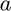
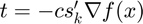
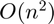

Lecture 6 - Direction-Set and Quasi-Newton Optimization Methods
Last week we examined optimization algorithms, ending with Newton's Method. This week we'll go over a series of methods inspired by Newton's method which are commonly implemented in practice.
Contents
Stopping Criteria for Newton and Quasi-Newton Methods
Unlike bracketing, or the area of the simplex for Nelder-Mead. We can't simply think about a shrinking interval for Newton methods. Instead, we use two stopping rules based on the information we've computed.
First, has the sequence of guesses converged:
This is a relative stopping rule, since it is scaled by the norm of , the 1 simply deals with the case where is near the origin.
Second, we want to know if we are at a local miniumum:
If this condition does not hold, then we have converged to a non-optimal point, and cannot claim the problem has been solved. Even if it does hold, we want to also check the first condition to make sure the problem doesn't just have a ``plateau'' near the optimum.
How to choose and  ?
?
- Can't be lower (or same order as) machine epsilon, .
- Should not be tighter than the accuracy with which you are computing (finite differences?).
- Often use values between and .
Overview: Generic Direction Set Methods
Judd offers a ``generic algorithm'' which incorporates both a Hessian approximation and a line search:
Initialization: Choose initial guess and stopping parameters and .
- Compute search direction .
- Find that solves .
- Assign .
- If go to 5, else, go to 1.
- If , Return convergence to local optimum, else, return convergence to non-optimal point.
The two ingredients are picking a direction, and a step length. First, let's consider how to pick a direction, keeping step length fixed.
Steepest Descent
The simplist quasi-Newton method simply replaces the Hessian with the identity matrix. This means the direction is entirely determined by the gradient.
Advantages and disadvantages:
- Always moves towards an optimum.
- Ignores curvature information
- Linear convergence only.
In practice, this is not likely to work unless we dampen the step length. either by adding a line search or simply shortening the step size using a constant factor . Here is an implemention edited from our Newton code last week:
Recall we want to minimize:
So we use:
n=0; %initialize iteration counter focerr=1; %initialize error x = [1; 1]; %x=[.05;-.5]; %set starting value % a = 0.09; %dampen value, if we set this anywhere near 1, things will blow up. %Computation loop while focerr>1e-5&n<100 %Compute Gradient gradf=[4*(x(1)-x(2))^3+4*x(1)-1;... -4*(x(1)-x(2))^3+2*x(2)+2]; %Compute Hessian (only for Newton) %Hf= [12*(x(1)-x(2))^2+4, -12*(x(1)-x(2))^2;... % -12*(x(1)-x(2))^2, 12*(x(1)-x(2))^2+2]; %Perform Iteration %Newton: %y=x-Hf\gradf %Steepest Descent: y = x - a*gradf; x=y; n=n+1; %Calculate FOC Error focerr= norm(gradf); end n,x,focerr, %display end values
n =
46
x =
0.0335
-0.5670
focerr =
7.5562e-06
Recall that Newton's method solved this problem in only 8 iterations. Also, check what happens when we raise closer to 1.
Davidson-Fletcher-Powell (DFP) and Broyden-Fletcher-Goldfarb-Shano (BFGS)
Steepest descents biggest disadvantage is that it completely ignores curvature. DFP and BFGS are more akin to our nonlinear equations quasi-Newton methods in that they use consecutive iterates to estimate curvature.
Both satisfy the quasi-Newton Condition. Whereas a Newton step is approximately,
![$$ x^{(k+1)} - x^{(k)} = d^{(k)} \approx H^{-1}(x^{(k)}) [ \nabla f(x^{(k)} + d^{(k)} ) - \nabla f(x^{(k)})] $$](optim2_eq11415214212438945856.png)
Where the approximation comes from a finite difference intuition. The quasi-Newton condition selects a hessian approxmation to satisfies this exactly:
DFP and BFGS are simply two different updating schemes that satisfy this condtion. They are both generalizations of the secant method.
DFP:
where .
BFGS:
where .
I'm going to spare you the algebra, suffice it to say that both extend the intuition of Broyden's method to Hessian approximation and BFGS solves the dual problem that DFP solves. In practice BFGS is the market leader.
Miranda and Fackler implement Steepest Ascent, DFP and BFGS updating in their maximization function qnewton.
The MATLAB native function fminunc implements BFGS updating under the option 'Algorithm' = 'quasi-newton' (which is also the default).
How does it work on our toy problem. First, let's writhe our function out explicilty:
File 'qfunc.m' not found.
Now we can call fminunc:
options = optimoptions('fminunc','Algorithm','quasi-newton',... 'SpecifyObjectiveGradient',true, 'Display','iter'); [xstar, fstar] = fminunc('qfunc', [1, 1], options); disp(xstar);
Undefined function 'qfunc' for input arguments of type 'double'.
Error in fminunc (line 287)
[f,GRAD] = feval(funfcn{3},x,varargin{:});
Error in optim2 (line 164)
[xstar, fstar] = fminunc('qfunc', [1, 1], options);
Caused by:
Failure in initial objective function evaluation. FMINUNC cannot continueCan also use numerical differentiation, we get more function evaluations, but the same number of iterations:
options = optimoptions('fminunc','Algorithm','quasi-newton',... 'SpecifyObjectiveGradient',false, 'Display','iter'); fminunc('qfunc', [1, 1], options);
That's (almost) everything I have for determining the direction, now let's see what the "step-size" column is all about...
Line Search
Once we have settled on a direction, we may want to try step sizes other than 1 to optimize the objective as much as posible in the chosen direction. This is simply a 1 dimensional search problem. If the search direction is then we want to solve:

We could use golden-search for this, but we don't typically because it spends too much time optimizing intermediate problems, only need a very approximate solution.
Hence, it is useful to use backtracking based on the Armijo-Goldstein condition, for an initial step size and control parameters and :
- Set  and iteration counter
- While , increment and set .
- Return as next iterate.
In words, backtrack until the improvement in is at least of that predicted by taking the linear Taylor approximation around .
There are many alternative line search methods, (see Miranda and Fackler for several), however this captures the basic intuition.
While fminunc has limited flexibility in line search options, the Miranda and Fackler package qnewton is easier to customize, but I've found the MATLAB functions to be more robust.
Conjugate Gradient Iterations
BFGS is a workhorse for "small" or "medium" size problems which are roughly problems up to 100 variables. However even though they only approximate a Hessian, they still need to store it. For problems with 1000+ variables, this will be costly, unless we are able to exploit sparsity.
Like stepest descent, conjugate gradient methods work with ONLY gradient information. Keeping memory needs light.
They use previous iterates help deal with the curvature of the problem.
Consider a quadratic function:
If we optimize along one direction (in steepest descent (u = -\nabla f$), then we will solve:
The problem would be solved if this holds for any . Next we choose a new direction , however we don't want to violate the conditions we've already solved. If is conjugate to with respect to :
We know that maximizing along won't violate the conditions we satisfied for .
Note that a set of conjugate directions form a basis, if the problem were actually quadratic in , this algorithm would solve the problem in steps. Of course, for us that quadratic intuition is just an approximation.
Usually, congugate-gradient methods are combined with steepest descent, that is we will ``deflect'' the steepest descent direction (the gradient) such that it is conjugate with the previous iterate, this leads to the updating rule:
Some notes:
- In practice, since the problem is not quadratic, many implementations will "reset" by using a standard steepest descent step every (number of dimensions) iterations.
- KNITRO makes used of conjugate-gradient iterations as a sort of "sub-iteration" in the context of a BFGS, L-BFGS or full newton search.
- Here is an example of how to call KNITRO, but it will only work if you have a license (PSU lab computers and the cluster do, your laptop probably doesn't).
- It will not use CG iterations because this problem is too small.
[sol] = knitromatlab(@(x) qfunc(x), [1, 1])
Limited Memory BFGS (L-BFGS)
What if we want to use a quasi-newton method, but our problem is too large? L-BFGS avoids storing the hessian and instead approximates it from the past iteration information. It specifically stores the last values of:
It should be clear that this is just the secant information from the last iterations. Then an approximation of the hessian using this information can be written recursively:
Where we start with  .
.
Of course, we don't want to actually construct an approximation for , but we don't have to, we can compute the next step as:
Which can be computed via a series of vector multiplications. This means the storage and cost of iteration will be instead of , useful if .
Final Thoughts:
- I've used L-BFGS mostly on large scaled constrained problems, a big decision is just how large to make . In principle larger is better, but each iteration will be slower.
- I would never try to code this up myself, MATLAB and KNITRO (although MATLAB for fmincon, only, not fminunc).
- For both BFGS and L-BFGS, the Hessian approximation is path-dependent. This means if your algorithm converges, but not to a local minium (tolX), if you re-start it, it may be able to continue progressing to a local min.
- All of these Hessian approximations are going to be bad for inference. If you are computing standard errors, either compute the full finite difference Hessian yourself (or make sure that is what your solver returns), or use the outer-product approximation.